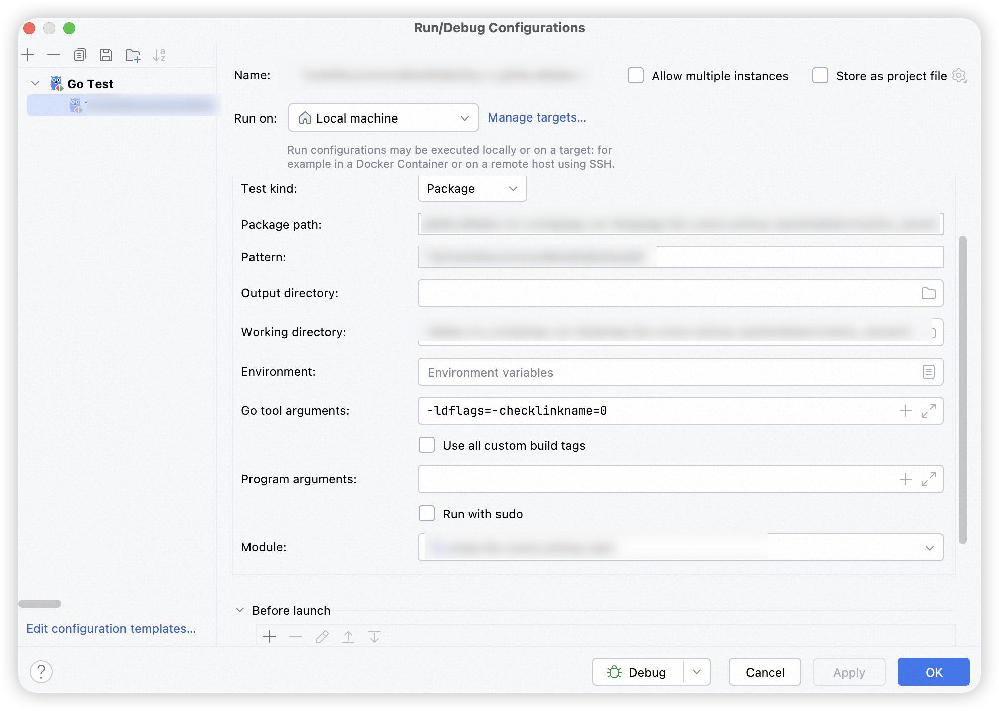

Go语言GoLand debug失效问题修复
Posted by 渐行渐远 on Tuesday, October 1, 2024 共1262字Mac上使用GoLand做项目开发，在经过一系列系统升级后发现：debug的能力失效了。当执行单测debug时控制台会输出下面的错误提示：
API server listening at: 127.0.0.1:63516
Warning: no debug info found, some functionality will be missing such as stack traces and variable evaluation.
could not launch process: could not read debug info (decoding dwarf section info at offset 0x0: too short) and could not read go symbol table (could not find rodata struct member)
求助大模型给出解决思路:
在使用goland debug程序的时候，发现debug无法正常执行，并给出了上述的报错。请帮忙分析无法正常debug的原因，并给出问题的解决思路
- 错误信息解读：
Warning: no debug info found：表示调试器无法找到有效的调试信息。decoding dwarf section info at offset 0x0: too short：说明 DWARF 调试信息（用于调试的元数据）在解析时出现问题，可能是文件损坏或生成不完整。could not read go symbol table (could not find rodata struct member)：表明调试器无法读取 Go 的符号表，可能与编译器版本或编译选项有关。
- 可能的原因：
- Go 版本问题：某些 Go 版本可能存在与调试器兼容性的问题，尤其是当使用较新或较旧的 Go 版本时。
- 编译选项问题：如果编译时未启用调试信息（例如未使用
-gcflags="all=-N -l"），生成的二进制文件将缺少必要的调试信息。 - GoLand 配置问题：GoLand 的调试器配置可能未正确设置，导致无法正确解析调试信息。
- 环境变量问题：某些环境变量（如
GOROOT或GOPATH）配置错误，可能导致调试器无法找到正确的工具链或依赖。 - DWARF 格式问题：某些情况下，Go 编译器生成的 DWARF 调试信息可能与调试器不兼容。
升级匹配对应的dlv版本
Go debug 依赖的工具 delve，查阅了相关内容，有一种解决思路是将 dlv 升级到最新版本。查看 delve 的发版信息：
https://github.com/go-delve/delve/releases，对应的 dlv 会随着 Go 版本的发布而出新的版本，但不是一一对应的。
比如版本1.22.1的就对应了Go 1.22.1的版本，升级更新 dlv 直接执行对应的安装命令

下面我将 dlv 升级到 v1.23.0，对应的运行Go版本也切换到v1.23.0，发现还是没有解决问题，但对应的报错发生了变化
go install github.com/go-delve/delve/cmd/dlv@v1.23.0
升级对应的xcode-select
安装最新版本的 xcode，就像一个无头苍蝇，我重新删除了对应的文件路径，即使重新安装完成后，debug问题依然无效。
xcode-select --install
其它人遇到了同样的问题
搜索到GoLand编译器下的Issues：no debug info found, some functionality missing such as stack traces and variable evaluation.
在问题的回复中引出了cmd/link: issues with Apple’s new linker in Xcode 15 #61229问题，切好我本机安装的xcode版本恰好也是 2408，看来是Xcode升级导致的问题。

控制台提示 sonic 包不兼容，之前为了性能选择使用了 sonic 来做 json 的反序列化，但优化性能的同时牺牲了未来的扩展性，一件事情总有两面。
link: github.com/bytedance/sonic/ast: invalid reference to encoding/json.safeSet
好在这个问题同样不是我第一次遇见，这里是对应的Issue # go project start error #1180e。最简单的处理方案当然是升级版本
我采用了另外的处理思路，因为我本地的Go版本是 1.23，通过在 Go Test模板中的编译工具中指定指令
这个是1.23.0 默认开启了//go:linkname 检查，通过 -ldflags=-checklinkname=0 关闭就可以了， 以下两种方式可以解决go get -u github.com/bytedance/sonic 升级这个库到最新 或 在 go build 加上 -ldflags=-checklinkname=0 即可编译通过
